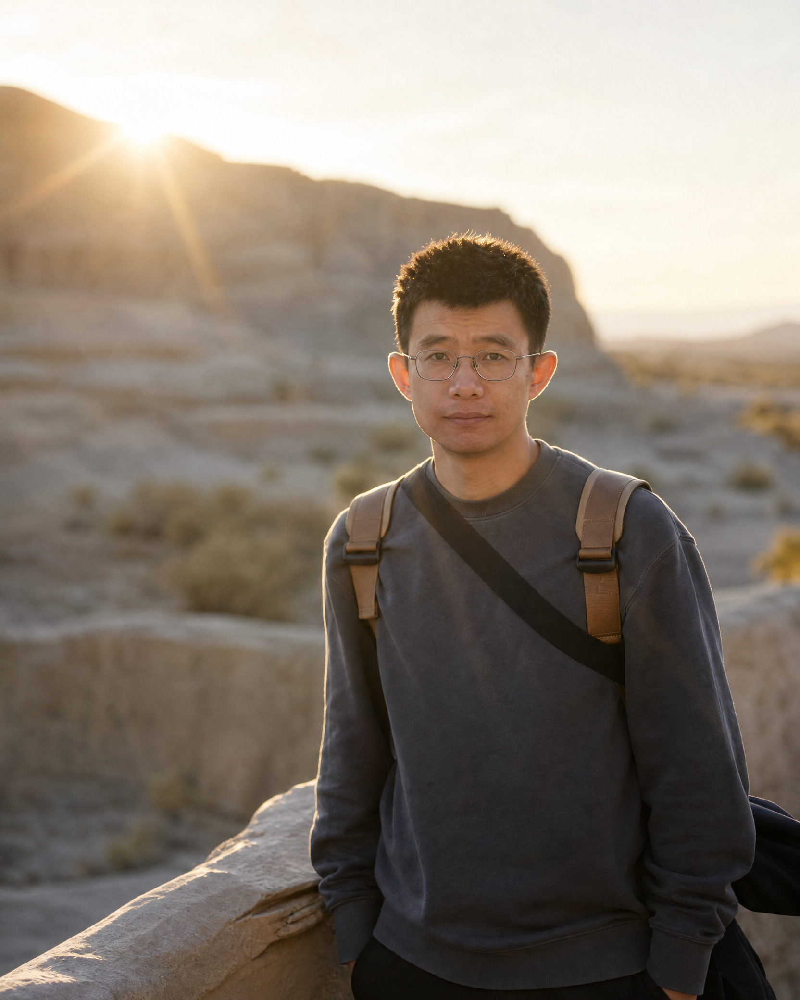

李重仪
南开大学计算机学院教授
我现任南开大学计算机学院教授，领导 π 研究组；同时兼任河套学院教授。
加入南开大学前，我曾任南洋理工大学 MMLab@NTU、S-Lab 助理教授（研究）及博士后研究员，并与 陈明耀教授（Prof. Chen Change Loy）紧密合作；我也曾在香港城市大学从事博士后研究，并与 邝得互教授（Prof. Sam Kwong）紧密合作。
我于天津大学获得博士学位，并在澳大利亚国立大学进行联合培养，与 Fatih Porikli 教授紧密合作。研究兴趣涵盖计算成像、图像增强与复原、生成式视觉、多模态模型与视觉智能，致力于构建能在真实环境中理解、复原与创造图像和视频的可靠视觉系统。
招生与合作。 欢迎对计算机视觉、智能成像与生成式人工智能感兴趣的硕士生、博士生、博士后和科研合作者联系交流。来信时请附上个人简介、研究兴趣与个人简历。
研究组成员、项目与招生的详细信息，请访问 π 研究组网站。